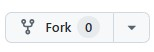

Algemene informatie
Pre-requistions ROS2-Humble
Installeer ROS Humble, kies uit 1 van de twee volgende mogelijkheden:
WSL Distributie onder Windows(voorkeur voor studenten M)
Native Ubuntu
Zie voor installatie: Windows Subsystem for Linux Handleiding
Volg instrucies voor ROS2 Humble
Opmerking: je dient eerst Ubuntu 22 geinstallerd te hebben!!!
Volg de instructies voor het installeren ROS-Humble
Kies: ros-humble-desktop
Cloning de ROS2 Industrial workspace
Voor het maken van de ROS Industrial workspace maak je gebruik van een Github clone die is voorbereid. Je kunt er voor keizen om deze clone onder een eigen account van Github te plaatsen(1e keuze hieronder). Je kunt daarna eenvoudig backup’s van je werk maken naar je eigen Github account.
Maak een account aan bij Github en login op dit account
Open de ROS2_Industrial repository
Maak een Fork van de repository naar je eigen Github account door op het Fork icoon te klikken:

Volg de instructies, maar wijzig de naam van de nieuwe repository niet. Bevestig met Create Fork
Nu kun je de workspace als volgt creëren
mkdir -p ~/ros2_industrial_ws/src
cd ~/ros2_industrial_ws/src
git clone https://github.com/<jouw_account_naam>/ROS2_industrial.git
ps. Het gebruik van github (zoals add, commit & push commando’s) valt buiten de scope van deze workshop
Je kunt de workspace als volgt creëren
mkdir -p ~/ros2_industrial_ws/src
cd ~/ros2_industrial_ws/src
git clone https://github.com/AvansMechatronica/ROS2_industrial.git
Installeren van de benodigde ROS2 packages en software
cd ~/ros2_industrial_ws/src/ROS2_industrial/install
./install.bash
Bouwen van de ROS2 Industrial workspace
cd ~/ros2_industrial_ws/
colcon build --symlink-install
source install/setup.bash
echo "source ~/ros2_industrial_ws/install/setup.bash" >> ~/.bashrc
Opmerking: Gebruik de laatse regel slechts 1 maal.
Aantekening voor windows gebruikers
Opmerking: Alleen als je geen gebruik maakt van de door Avans gemaakte WSL-Humble distributie
Je kunt de WSL Ubuntu-22.04 distributie uit de Microsoft Store gebruiken. Gebruik als ontwikkelomgeving [Visual Studio Code] (https://code.visualstudio.com/download). Wijzig de installatie en voeg de WSL-plugin toe aan Visual Studio Code. Open de distributie met
Inleveren van opdrachten
Als je een opdracht dient in te leveren voor je opleiding dan vind je dat terug in de Elekronische Leeromgeving van je opleiding (bijvoorbeeld Brightspace). Zorg ervoor dat je bij elke opdracht de volgende informatie in het bestand invult:
Naam Student
Studentnummer
Datum
Je gaat dan akkoord met onderstaande verklaring:
Door het inleveren van dit bestand verklaar ik dat
ik deze opdracht zelfstandig heb uitgevoerd en
dat ik geen code van anderen heb gebruikt.
Tevens ga ik akkoord met de beoordeling van deze opdracht.
Verantwoording
Deze workshop is geinspireerd op hello real world ros robot operating system van de Technische Universiteit Delft/Nederland(TUD)